妙義山・荒船山・篭ノ登山
| 日付 | 2011年10月8日（土） - 2011年10月10日（月） | ||||||
|---|---|---|---|---|---|---|---|
| 山域 | 西上州、浅間周辺 | ||||||
| メンバー | 家族（妻、長女・0歳） | ||||||
| 山行形態 | 子連れ2泊3日ホテル泊 | ||||||
| アクセス | 車 | ||||||
| ルート (Map2) |
|
2日目
本日は荒船山の登山。以前内山峠から登ったことがあるので、
今回は宿から近い相沢登山口から登ることにする。
林道で奥の方まで来られるのはマイカー登山のメリットだ。
8:45 相沢登山口到着。標高600m。
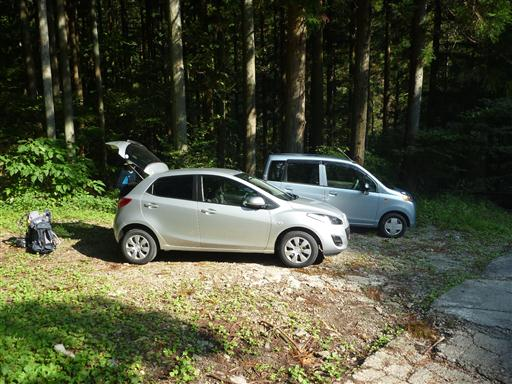
薄暗い登山道を登っていく。歩き始めてすぐに子供が泣き始めたため登山道の真中でミルクタイム。
なかなか思い通りには進まない。
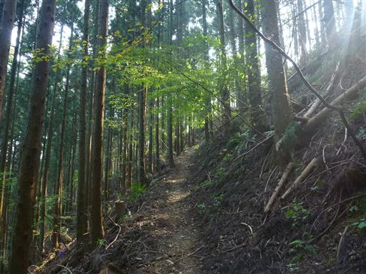
少し登ると尾根道に到達する。2時間の登りだが、久々の登山のため、なかなかしんどい。
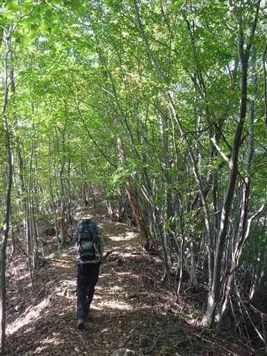
中の宮に到着。登山道の中間地点。巨大な岩が鎮座している。
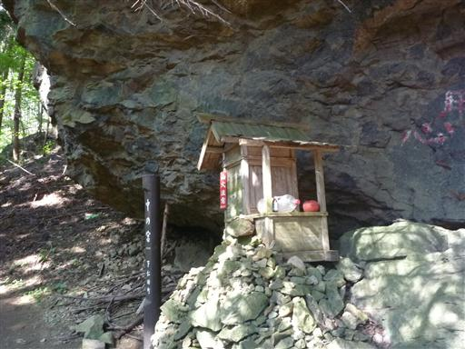
急な坂を登っていくと突然、平坦な台地上に到達する。
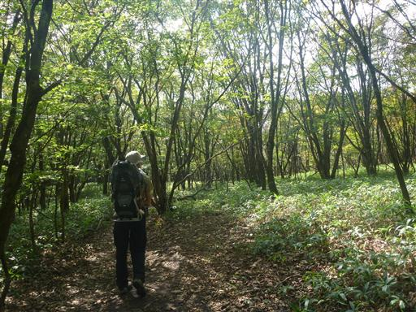
少し歩くと艫岩展望台に到着する。
大展望が広がるはずの場所だが、全体的に霞んでいて遠くの景色はよく見えない。
楽しみにしていた浅間山の姿も望むことができなかった。
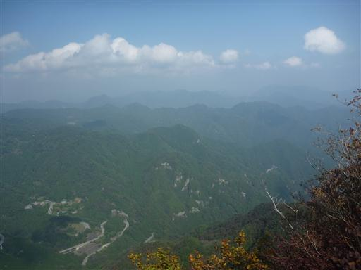
下を覗く。高度感はなかなかのもの。
クレヨンしんちゃんの作者はここから落ちて命を失った。
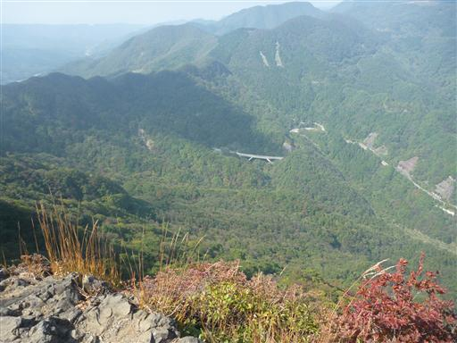
艫岩展望台から経塚山まで台地上の平坦な道を歩いていく。
前回来たときは霧氷が素晴らしかったが、この季節も素晴らしい。
紅葉の時期は一段と美しいだろう。
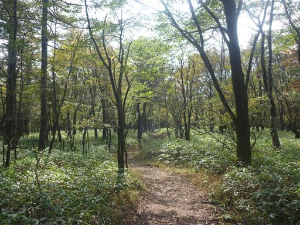
11:40 経塚山山頂到着。標高1423m。
登山を始めたばかりのころに登った山で、ここに来るのは4年半ぶりだ。
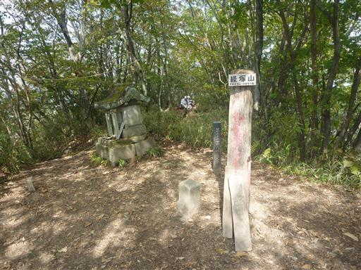
帰りは艫岩まで荷物の持ち役を交代する。
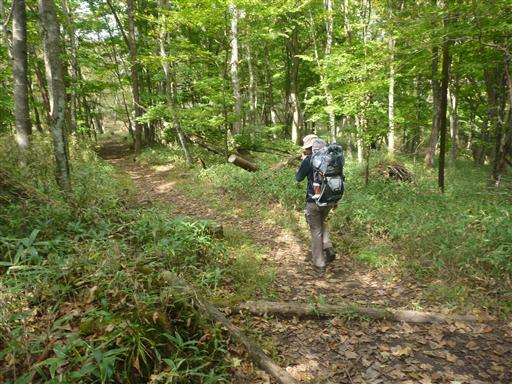
艫岩展望台で昼食をとって下山開始。
登山道がたくさんある山なのに、同じ道を戻らなければならないのはマイカー登山のデメリットだ。

車まで戻り、本日の宿泊地・湯の丸高原ホテルに移動する。
小学生の野球部が合宿で使っていたようで、終始賑やかだった。
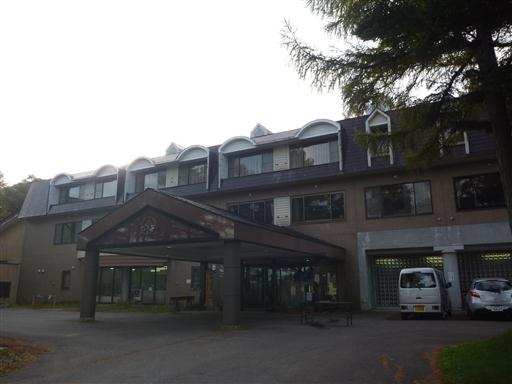